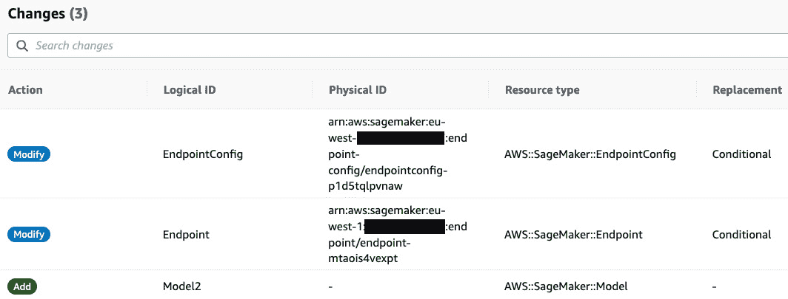
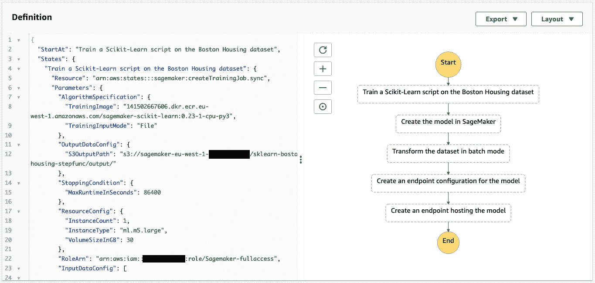

第 12 章:自动化机器学习工作流程
在前一章中，您学习了如何在不同的配置中部署机器学习模型，使用了boto3 SDK。我们在 Jupyter 笔记本中使用了他们的 APIs 这是快速实验和迭代的首选方式。
然而，运行笔记本来完成生产任务并不是一个好主意。即使您的代码已经过仔细测试，那么监控、日志记录、创建其他 AWS 资源、处理错误、回滚等等又如何呢？做好这一切将需要大量额外的工作和代码，从而有可能出现更多的错误。需要一种更加工业化的方法。
在本章中，您将首先学习如何使用AWSCloud formation和AWSCloud Development Kit(CDK)——专门构建的两个 AWS 服务来提供可重复性、可预测性和健壮性。您将看到如何在应用更改之前预览它们，以避免不受控制的和潜在的破坏性操作。
然后，您将学习如何使用另外两个服务来自动化端到端的机器学习工作流——AWS步骤功能和亚马逊 SageMaker 管道。您将看到如何使用简单的 API 构建工作流，以及如何在 SageMaker Studio 中可视化结果。
在本章中，我们将讨论以下主题:
- 通过 AWS 云形成实现自动化
- 通过 AWS CDK 实现自动化
- 使用 AWS 步骤功能构建端到端工作流
- 使用 Amazon SageMaker 管道构建端到端工作流
技术要求
您将需要一个 AWS 帐户来运行本章中包含的示例。如果您还没有，请将浏览器指向https://aws.amazon.com/getting-started/来创建一个。您还应该熟悉 AWS 免费层(https://aws.amazon.com/free/)，它允许您在一定的使用限制内免费使用许多 AWS 服务。
您需要为您的帐户(https://aws.amazon.com/cli/)安装并配置 AWS 命令行接口 ( CLI )。
你将需要一个工作的pandas、numpy等等)。
本书中包含的代码示例可以在 GitHub 上的https://GitHub . com/packt publishing/Learn-Amazon-sage maker-second-edition获得。你需要安装一个 Git 客户端来访问它们(https://git-scm.com/)。
自动气象站云形成自动化
AWS CloudFormation 长期以来一直是自动化 AWS 上的基础设施构建和操作的首选方式(https://aws.amazon.com/cloudformation)。你当然可以写一本关于这个主题的书,但是我们将在这一部分坚持基础知识。
使用 CloudFormation 的第一步是编写一个模板——即一个 JSON 或 YAML 文本文件，描述你想要构建的资源，比如一个 EC2 实例或一个 S3 桶。几乎所有的 AWS 服务都有资源可用，SageMaker 也不例外。如果我们查看https://docs . AWS . Amazon . com/AWS cloudformation/latest/user guide/AWS _ sage maker . html，我们会看到我们可以创建 SageMaker Studio 应用程序、部署端点等等。
模板可以(也应该)包括参数和输出。前者有助于使模板尽可能通用。后者提供下游应用程序可以使用的信息，比如端点 URL 或存储桶名称。
一旦你写好了模板文件，你就把它传递给 CloudFormation 来创建一个栈——也就是 AWS 资源的集合。CloudFormation 将解析模板并自动创建所有资源。依赖关系也是自动管理的，资源将以正确的顺序创建。如果不能正确创建一个栈，CloudFormation 会回滚它，删除目前已经构建好的资源。
可以通过应用较新的模板修订来更新堆栈。CloudFormation 将分析变化，并相应地创建、删除、更新或替换资源。由于有了变更集，您可以在执行变更之前对其进行验证，然后决定是否继续。
当然，栈可以被删除，CloudFormation 会自动拆除它的所有资源，这是清理你的构建而不留下任何残迹的好方法。
让我们运行第一个例子，其中我们将一个模型部署到一个实时端点。
编写模板
这个堆栈将相当于调用我们在 第十一章中学习的boto3 API，部署机器学习模型:create_model()create_endpoint_configuration()create_endpoint()。相应地，我们将定义三个 CloudFormation 资源(一个模型、一个端点配置和一个端点)及其参数:
- 创建一个名为
endpoint-one-model.yml的新 YAML 文件，我们首先在Parameters部分定义堆栈的输入参数。每个参数都有名称、描述和类型。可选地，我们可以提供默认值:AWSTemplateFormatVersion: 2010-09-09 Parameters: ModelName: Description: Model name Type: String ModelDataUrl: Description: Location of model artifact Type: String ContainerImage: Description: Container used to deploy the model Type: String InstanceType: Description: Instance type Type: String Default: ml.m5.large InstanceCount: Description: Instance count Type: String Default: 1 RoleArn: Description: Execution Role ARN Type: String
- 在
Resources部分，我们定义了一个模型资源，使用Ref内置函数来引用适当的输入参数:Resources: Model: Type: "AWS::SageMaker::Model" Properties: Containers: - Image: !Ref ContainerImage ModelDataUrl: !Ref ModelDataUrl ExecutionRoleArn: !Ref RoleArn ModelName: !Ref ModelName
- 然后，我们定义一个端点配置资源。我们使用
GetAtt内置函数来获取模型资源的名称。当然，这要求模型资源已经存在，CloudFormation 将确保资源以正确的顺序创建:EndpointConfig: Type: "AWS::SageMaker::EndpointConfig" Properties: ProductionVariants: - ModelName: !GetAtt Model.ModelName VariantName: variant-1 InitialInstanceCount: !Ref InstanceCount InstanceType: !Ref InstanceType InitialVariantWeight: 1.0
- 最后，我们定义一个端点资源。同样，我们使用
GetAtt来查找端点配置的名称:Endpoint: Type: "AWS::SageMaker::Endpoint" Properties: EndpointConfigName: !GetAtt EndpointConfig.EndpointConfigName
- 在
Outputs部分，我们返回端点的云信息标识符，以及它的名字:Outputs: EndpointId: Value: !Ref Endpoint EndpointName: Value: !GetAtt Endpoint.EndpointName
现在模板完成了(endpoint-one-model.yml)，我们可以创建一个堆栈了。
注意
请确保您的 IAM 角色有权调用 CloudFormation APIs。如果没有，请将AWSCloudFormationFullAccess托管策略添加到角色中。
将模型部署到实时端点
让我们使用APIboto3创建一个栈，部署一个 TensorFlow 模型。我们将在时尚 MNIST 上重用一个用 Keras 训练过的模特:
注意
因为我们的模板是完全独立于区域的，所以您可以使用任何您想要的区域。只要确保您已经在那里训练了一个模型，并且您正在使用适当的容器映像。
- 我们需要 SageMaker 和 CloudFormation 的
boto3客户端:import boto3 sm = boto3.client('sagemaker') cf = boto3.client('cloudformation') - 我们描述训练作业，以找到它的工件的位置，以及它的执行角色:
training_job = 'tensorflow-training-2021-05-28-14-25-57-394' job = sm.describe_training_job( TrainingJobName=training_job) model_data_url = job['ModelArtifacts']['S3ModelArtifacts'] role_arn = job['RoleArn']
- 我们将容器设置为用于部署。在某些情况下，这是不必要的，因为相同的容器用于培训和部署。对于 TensorFlow 和其他框架，SageMaker 使用了两种不同的容器。你可以在https://github . com/AWS/deep-learning-containers/blob/master/available _ images . MD:
container_image = '763104351884.dkr.ecr.us-east-1.amazonaws.com/tensorflow-inference:2.1.0-cpu-py36-ubuntu18.04'
找到更多信息 - 然后，我们读取我们的模板，创建一个新的堆栈，并传递所需的参数:
import time timestamp = time.strftime("%Y-%m-%d-%H-%M-%S", time.gmtime()) stack_name='endpoint-one-model-'+timestamp with open('endpoint-one-model.yml', 'r') as f: response = cf.create_stack( StackName=stack_name, TemplateBody=f.read(), Parameters=[ { "ParameterKey":"ModelName", "ParameterValue":training_job+ '-'+timestamp }, { "ParameterKey":"ContainerImage", "ParameterValue":container_image }, { "ParameterKey":"ModelDataUrl", "ParameterValue":model_data_url }, { "ParameterKey":"RoleArn", "ParameterValue":role_arn } ] ) - Jumping to the CloudFormation console, we see that the stack is being created, as shown in the following screenshot. Notice that resources are created in the right order: model, endpoint configuration, and endpoint:
图 12.1–查看堆栈创建
正如我们所期望的那样，我们也在 SageMaker Studio 中看到了端点，如下面的截图所示:
图 12.2–查看端点创建
- Once the stack creation is complete, we can use its output to find the name of the endpoint:
response = cf.describe_stacks(StackName=stack_name) print(response['Stacks'][0]['StackStatus']) for o in response['Stacks'][0]['Outputs']: if o['OutputKey']=='EndpointName': endpoint_name = o['OutputValue'] print(endpoint_name)
这会打印出 CloudFormation 自动生成的堆栈状态和端点名称:
创建 _ 完成
端点-MTaOIs4Vexpt
- 我们可以像往常一样测试端点。然后，我们可以删除堆栈及其资源:
cf.delete_stack(StackName=stack_name)
不过，让我们而不是马上删除堆栈。相反，我们将使用变更集来更新它。
用变更集修改堆栈
- 我们使用相同的模板和参数创建一个新的变更集，除了
InstanceCount，我们将其设置为2:response = cf.create_change_set( StackName=stack_name, ChangeSetName='add-instance', UsePreviousTemplate=True, Parameters=[ { "ParameterKey":"InstanceCount", "ParameterValue": "2" }, { "ParameterKey":"ModelName", "UsePreviousValue": True }, { "ParameterKey":"ContainerImage", "UsePreviousValue": True }, { "ParameterKey":"ModelDataUrl", "UsePreviousValue": True }, { "ParameterKey":"RoleArn", "UsePreviousValue": True } ] ) - We see details on the change set in the CloudFormation console, as shown in the next screenshot. We could also use the
describe_change_set()API:图 12.3–查看变更集
这告诉我们，端点配置和端点需要修改，并且可能被替换。正如我们从 第 11 章部署机器学习模型中已经知道的，一个新的端点将被创建并以非破坏性方式应用到现有端点。
注意
在使用 CloudFormation 时，理解针对您的资源的替换政策至关重要。每种资源类型的文档中都有详细信息。
- By clicking on the
execute_change_set()API. As expected, the endpoint is immediately updated, as shown in the following screenshot:图 12.4–更新端点
- Once the update is complete, we see the sequence of events in the CloudFormation console, as shown in the next screenshot. A new endpoint configuration has been created and applied to the endpoint. The previous endpoint configuration has been deleted:

图 12.5–更新堆栈
- We can check that the endpoint is now backed by two instances:
r = sm.describe_endpoint(EndpointName=endpoint_name) print r(['ProductionVariants'][0] ['CurrentInstanceCount'])
这将打印出支持生产变型的实例数量:
2
向端点添加第二个生产变量
我们的初始模板仅定义了一个单一生产变体。我们将更新它并添加另一个(endpoint-two-models.yml):
- 在
Parameters部分，我们添加了第二个模型的条目:ModelName2: Description: Second model name Type: String ModelDataUrl2: Description: Location of second model artifact Type: String VariantWeight2: Description: Weight of second model Type: String Default: 0.0
- 我们在
Resources部分做同样的事情:Model2: Type: "AWS::SageMaker::Model" Properties: Containers: - Image: !Ref ContainerImage ModelDataUrl: !Ref ModelDataUrl2 ExecutionRoleArn: !Ref RoleArn ModelName: !Ref ModelName2
- 回到我们的笔记本，我们获得了另一项培训工作的信息。然后我们创建一个变更集，读取更新的模板并传递所有必需的参数:
training_job_2 = 'tensorflow-training-2020-06-08-07-32-18-734' job_2=sm.describe_training_job( TrainingJobName=training_job_2) model_data_url_2= job_2['ModelArtifacts']['S3ModelArtifacts'] with open('endpoint-two-models.yml', 'r') as f: response = cf.create_change_set( StackName=stack_name, ChangeSetName='add-model', TemplateBody=f.read(), Parameters=[ { "ParameterKey":"ModelName", "UsePreviousValue": True }, { "ParameterKey":"ModelDataUrl", "UsePreviousValue": True }, { "ParameterKey":"ContainerImage", "UsePreviousValue": True }, { "ParameterKey":"RoleArn", "UsePreviousValue": True }, { "ParameterKey":"ModelName2", "ParameterValue": training_job_2+'- '+timestamp}, { "ParameterKey":"ModelDataUrl2", "ParameterValue": model_data_url_2 } ] ) - Looking at the CloudFormation console, we see the changes caused by the change set. Create a new model and modify the endpoint configuration and the endpoint:
图 12.6–查看变更集
- 我们执行变更集。完成后，我们看到端点现在支持两种生产变体。请注意，实例计数回到了它的初始值，因为我们在更新的模板中将其定义为
1:
图 12.7–查看生产变量
新的生产变量的权重为0，因此不会用于预测。让我们看看如何使用金丝雀部署逐步引入 it。
实施金丝雀部署
金丝雀部署是一种流行的技术，用于渐进的应用程序部署(https://martinfowler.com/bliki/CanaryRelease.html)，它也可以用于机器学习模型。
简单地说，我们将使用一系列的堆栈更新，以 10%的增量逐渐增加第二个生产变体的权重，直到它完全取代第一个生产变体。我们还将创建一个 CloudWatch 警报来监控第二个生产变体的延迟——如果警报被触发，变更集将被回滚:
- 我们创建了一个 CloudWatch 警报来监控第二个生产变体的 60 秒平均延迟。我们将阈值设置为 500 毫秒:
cw = boto3.client('cloudwatch') alarm_name = 'My_endpoint_latency' response = cw.put_metric_alarm( AlarmName=alarm_name, ComparisonOperator='GreaterThanThreshold', EvaluationPeriods=1, MetricName='ModelLatency', Namespace='AWS/SageMaker', Period=60, Statistic='Average', Threshold=500000.0, AlarmDescription= '1-minute average latency exceeds 500ms', Dimensions=[ { 'Name': 'EndpointName', 'Value': endpoint_name }, { 'Name': 'VariantName', 'Value': 'variant-2' } ], Unit='Microseconds' ) - 我们找到报警的 ARN:
response = cw.describe_alarms(AlarmNames=[alarm_name]) for a in response['MetricAlarms']: if a['AlarmName'] == alarm_name: alarm_arn = a['AlarmArn']
- 然后，我们在权重上循环并更新堆栈。这里不需要变更集，因为从资源的角度来看，我们确切地知道将会发生什么。我们将我们的 CloudWatch 警报设置为回滚触发器，在每次更新后，在进入下一次更新之前，给它五分钟的时间
这就够了。很酷，你不觉得吗？
这个电池将运行几个小时，所以不要停止它。在另一个笔记本中，下一步是开始向端点发送一些流量。为了简洁起见，我将不包括代码，它与我们在 第 7 章使用内置框架扩展机器学习服务中使用的代码相同。你会在 GitHub 资源库中找到这本书的笔记本(Chapter12/cloudformation/Predict Fashion MNIST images.ipynb)。
现在，我们要做的就是坐下来，喝杯茶，享受我们的模型被安全自动部署的事实。由于端点更新是无缝的，客户端应用程序不会注意到的事情。
几个小时后，部署完成。下一个屏幕截图显示了一段时间内对这两种变体的调用。正如我们所看到的，流量逐渐从第一种变型转移到第二种变型:
图 12.8–监控金丝雀部署
延迟保持在我们的 500 毫秒的限制之内，警报没有被触发，如下面的截图所示:
图 12.9–查看 CloudWatch 警报
这个例子可以作为您自己部署的起点。例如，您可以添加一个监控4xx或5xx HTTP 错误的警报。您还可以监视受预测延迟和准确性直接影响的业务指标，例如点击率、转换率等。添加一个有用的东西将是一个警报通知(电子邮件、SMS，或者甚至是 Lambda 函数),以便在模型部署失败时触发下游的动作。可能性是无限的！
当你完成后，不要忘记删除堆栈，无论是在云形成控制台还是用delete_stack() API。这将自动清理堆栈创建的所有 AWS 资源。
蓝绿色展开是另一种流行的技术。让我们看看如何在 SageMaker 上实现它。
实施蓝绿部署
蓝绿色部署需要两个生产环境(https://martinfowler.com/bliki/BlueGreenDeployment.html):
让我们来看两个可能的场景，我们可以使用与用于金丝雀部署的相同的 API 来实现。
通过单个端点实施蓝绿色部署
- 创建具有两个生产变量的新端点配置:一个用于当前模型，一个用于新模型。初始权重将被分别设置为
1和0。 - 将其应用于端点。
- 对新的生产变体进行测试，用
invoke_endpoint()中的TargetVariant参数明确选择它。 - 当测试令人满意时，将重量更新到
0和1。这将无缝地将流量切换到新模型。如果出现任何问题，将重量恢复到1和0。 - 部署完成后，更新端点以删除第一个生产变量。
这是一个简单而可靠的解决方案。然而，更新一个端点需要几分钟的时间，这使得整个过程没有你希望的那么快。让我们看看如何通过使用两个端点来解决这个问题。
使用两个端点实施蓝绿色部署
- 创建运行新版本模型的第二个端点。
- 在这个新端点上运行测试。
- 当测试结果令人满意时，将所有流量切换到新的端点。这可以通过不同的方式实现；例如，更新业务应用程序中的参数，或者更新私有 DNS 条目。如果有任何问题，恢复到以前的设置。
- 部署完成后，删除旧端点。
这个设置稍微复杂一点，但是它让您可以立即从一个模型版本切换到下一个版本，无论是部署还是回滚。
CloudFormation 是一个非常棒的自动化工具，花时间学习它会有回报的。然而一些 AWS 用户更喜欢写代码而不是写模板，这就是我们引入 CDK 的原因。
通过自动气象站 CDK 实现自动化
AWS CDK 是一个多语言 SDK，让你编写代码来定义 AWS 基础设施(https://github.com/aws/aws-cdk)。然后，使用 CDK CLI，您可以在幕后使用 CloudFormation 来配置该基础架构。
安装 CDK
当npm工具安装在您的机器上(https://www.npmjs.com/get-npm)时，CDK 被本地实现。
安装 CDK 就像这样简单:
$ npm i -g aws-cdk $ cdk --version 1.114.0 (build 7e41b6b)
创建 CDK 应用程序
我们将部署与 CloudFormation 相同的模型。我会用 Python，你也可以用 JavaScript 、 TypeScript 、 Java ，还有。网。API 文件可从 https://docs.aws.amazon.com/cdk/api/latest/python/获得:
- 首先，我们创建名为
endpoint:$ mkdir cdk $ cd cdk $ cdk init --language python --app endpoint
的 Python 应用程序 - 这将自动创建一个虚拟环境，我们需要激活它:
$ source .venv/bin/activate
- 这也为我们的 CDK 代码创建了一个默认的
app.py文件，为应用程序配置创建了一个cdk.json文件，为安装依赖项创建了一个requirements.txt文件。相反，我们将使用 GitHub 存储库中的文件: - 在
requirements.txt文件中，我们为 S3 和 SageMaker 安装了 CDK 包。每种服务需要不同的包。例如，我们将为 S3 添加aws_cdk.aws_s3:-e . aws_cdk.aws_s3 aws_cdk.aws_sagemaker
- 然后我们照常安装需求:
$ pip install -r requirements.txt
- In the
cdk.jsonfile, we store the application context. Namely, key-value pairs that can be read by the application for configuration (https://docs.aws.amazon.com/cdk/latest/guide/context.html):{ "app": "python3 app.py", "context": { "role_arn": "arn:aws:iam::123456789012:role/Sagemaker-fullaccess" "model_name": "tf2-fmnist", "epc_name": "tf2-fmnist-epc", "ep_name": "tf2-fmnist-ep", "image": "763104351884.dkr.ecr.us-east-1.amazonaws.com/tensorflow-inference:2.1-cpu", "model_data_url": "s3://sagemaker-us-east-1-123456789012/keras2-fashion-mnist/output/tensorflow-training-2020-06-08-07-46-04-367/output/model.tar.gz" "instance_type": "ml.t2.xlarge", "instance_count": 1 } }这是向应用程序传递值的首选方式。您应该使用版本控制来管理这个文件，以便跟踪栈是如何构建的。
- 我们可以使用
cdk context命令查看应用程序的上下文:
图 12.10–查看 CDK 环境
编写 CDK 应用程序
- 我们导入所需的包:
import time from aws_cdk import ( aws_sagemaker as sagemaker, core )
- 我们扩展了
core.Stack类来创建我们自己的栈:class SagemakerEndpoint(core.Stack): def __init__(self, app: core.App, id: str, **kwargs) -> None: timestamp = '-'+time.strftime( "%Y-%m-%d-%H-%M-%S",time.gmtime()) super().__init__(app, id, **kwargs)
- 我们添加一个
CfnModel对象，读取适当的上下文值:model = sagemaker.CfnModel( scope = self, id="my_model", execution_role_arn= self.node.try_get_context("role_arn"), containers=[{ "image": self.node.try_get_context("image"), "modelDataUrl": self.node.try_get_context("model_data_url") }], model_name= self.node.try_get_context( "model_name")+timestamp ) - 我们添加一个
CfnEndpointConfig对象，使用内置的get_att()函数将它与模型关联起来。这创建了一个依赖关系，CloudFormation 将使用它来以正确的顺序构建资源:epc = sagemaker.CfnEndpointConfig( scope=self, id="my_epc", production_variants=[{ "modelName": core.Fn.get_att( model.logical_id, 'ModelName' ).to_string(), "variantName": "variant-1", "initialVariantWeight": 1.0, "initialInstanceCount": 1, "instanceType": self.node.try_get_context( "instance_type") }], endpoint_config_name= self.node.try_get_context("epc_name") +timestamp ) - 我们添加一个
CfnEndpoint对象，使用内置的get_att()函数将它关联到端点配置:ep = sagemaker.CfnEndpoint( scope=self, id="my_ep", endpoint_config_name= core.Fn.get_att( epc.logical_id, 'EndpointConfigName' ).to_string(), endpoint_name= self.node.try_get_context("ep_name") +timestamp ) - 最后，我们实例化应用程序:
app = core.App() SagemakerEndpoint( app, "SagemakerEndpoint", env={'region': 'eu-west-1'} ) app.synth()
我们的代码是完整的！
部署 CDK 应用程序
- 我们可以列出可用的堆栈:
$ cdk list SagemakerEndpointEU
- 我们还可以看到实际的云形成模板。它应该与我们在上一节中编写的模板极其相似:
$ cdk synth SagemakerEndpointEU
- Deploying the stack is equally simple, as shown in the next screenshot:
图 12.11–部署端点
- 查看 CloudFormation，我们看到堆栈是使用变更集创建的。几分钟后，端点开始服务。
- Editing
app.py, we set the initial instance count to2. We then ask CDK to deploy the stack, but without executing the change set, as shown in the next screenshot:
图 12.12–创建变更集
- If we're happy with the change set, we can execute it in the CloudFormation console, or run the previous command again without
--no-execute. As expected, and as shown in the next screenshot, the endpoint is updated:图 12.13–更新端点
- 完成后，我们可以销毁堆栈:
$ cdk destroy SagemakerEndpointEU
正如你所看到的，CDK 是直接编写模板的一种有趣的替代方式，同时仍然受益于 CloudFormation 的严格性和健壮性。
我们还没有做的一件事是自动化端到端的工作流，从培训到部署。让我们用 AWS 步骤函数来做这件事。
使用 AWS 步骤功能构建端到端工作流
在状态机(https://aws.amazon.com/step-functions/)上的基础上 AWS 步骤功能让您定义并运行工作流。状态机是步骤的组合，可以是顺序的、并行的或有条件的。每个步骤接收来自其前任的输入，执行操作，并将输出传递给其继任者。Step 函数集成了很多 AWS 服务，比如亚马逊 SageMaker、 AWS Lambda 、容器服务、亚马逊 DynamoDB 、亚马逊 EMR 、 AWS Glue 等等。
可以使用 JSON 和 Amazon States Language 来定义状态机，并且可以在服务控制台中可视化它们。状态机的执行是完全受管理的，因此您不需要提供任何基础设施来运行。
说到 SageMaker，Step Functions 有一个专用的 Python SDK，奇怪的命名为数据科学 SDK(https://github . com/AWS/AWS-Step-Functions-Data-Science-SDK-Python)。
让我们运行一个例子，其中我们为在 Boston Housing 数据集上训练的 scikit-learn 模型自动化训练和部署。
设置权限
首先，请确保您的用户或笔记本实例的 IAM 角色有权调用 Step 函数 API。如果不是，请将AWSStepFunctionsFullAccess托管策略添加到角色中。
然后，我们需要为 Step 函数创建一个服务角色，允许它代表我们调用 AWS APIs:
- 从 IAM 控制台(https://console.aws.amazon.com/iam/home#/roles)开始，我们点击创建角色。
- 我们选择 AWS 服务和步骤功能。
- 我们单击下一个屏幕，直到可以输入角色名称。姑且称之为
StepFunctionsWorkflowExecutionRole，点击创建角色。 - 选择该角色，我们单击其权限选项卡，然后单击添加内嵌策略。
- 选择 JSON 选项卡，我们用
Chapter12/step_functions/service-role-policy.json文件的内容替换空策略，并单击查看策略。 - 我们将策略命名为
StepFunctionsWorkflowExecutionPolicy，并点击创建策略。 - 我们记下角色的 ARN，然后关闭 IAM 控制台。
实施我们的第一个工作流程
在这个工作流中，我们将经历以下步骤序列:训练模型、创建模型、将其用于批量转换、创建端点配置，以及将模型部署到端点:
- 我们将训练集和测试集上传到 S3，在测试集中我们删除了目标属性。我们将使用后者进行批量转换:
import sagemaker import pandas as pd sess = sagemaker.Session() bucket = sess.default_bucket() prefix = 'sklearn-boston-housing-stepfunc' training_data = sess.upload_data( path='housing.csv', key_prefix=prefix + "/training") data = pd.read_csv('housing.csv') data.drop(['medv'], axis=1, inplace=True) data.to_csv('test.csv', index=False, header=False) batch_data = sess.upload_data( path='test.csv', key_prefix=prefix + "/batch") - 我们像往常一样配置我们的估计器:
from sagemaker.sklearn import SKLearn output = 's3://{}/{}/output/'.format(bucket,prefix) sk = SKLearn( entry_point='sklearn-boston-housing.py', role=sagemaker.get_execution_role(), framework_version='0.23-1', train_instance_count=1, train_instance_type='ml.m5.large', output_path=output, hyperparameters={ 'normalize': True, 'test-size': 0.1 } ) - 我们还定义了用于批量转换的转换器:
sk_transformer = sk.transformer( instance_count=1, instance_type='ml.m5.large')
- 我们导入工作流所需的步骤函数对象。你可以在https://AWS-step-functions-data-science-SDK . readthedocs . io/en/latest/:
import stepfunctions from stepfunctions import steps from stepfunctions.steps import TrainingStep, ModelStep, TransformStep from stepfunctions.inputs import ExecutionInput from stepfunctions.workflow import Workflow
找到 API 文档 - 我们定义工作流的输入。我们将传递给它一个培训作业名、一个模型名和一个端点名:
execution_input = ExecutionInput(schema={ 'JobName': str, 'ModelName': str, 'EndpointName': str} ) - 工作流程的第一步是培训步骤。我们向它传递估计量、数据集在 S3 的位置以及一个训练作业名称:
from sagemaker.inputs import TrainingInput training_step = TrainingStep( 'Train Scikit-Learn on the Boston Housing dataset', estimator=sk, data={'training': TrainingInput( training_data,content_type='text/csv')}, job_name=execution_input['JobName'] ) - 下一步是模型创建步骤。我们将在上一步中训练的模型的位置和模型名传递给它:
model_step = ModelStep( 'Create the model in SageMaker', model=training_step.get_expected_model(), model_name=execution_input['ModelName'] )
- 下一步是对测试数据集运行批处理转换。我们通过
transformer对象，测试数据集在 S3 的位置，其内容类型:transform_step = TransformStep( 'Transform the dataset in batch mode', transformer=sk_transformer, job_name=execution_input['JobName'], model_name=execution_input['ModelName'], data=batch_data, content_type='text/csv' )
- 下一步是创建端点配置:
endpoint_config_step = EndpointConfigStep( "Create an endpoint configuration for the model", endpoint_config_name=execution_input['ModelName'], model_name=execution_input['ModelName'], initial_instance_count=1, instance_type='ml.m5.large' )
- 最后一步是创建端点:
endpoint_step = EndpointStep( "Create an endpoint hosting the model", endpoint_name=execution_input['EndpointName'], endpoint_config_name=execution_input['ModelName'] )
- 既然已经定义了所有步骤，我们按顺序将它们链接起来:
workflow_definition = Chain([ training_step, model_step, transform_step, endpoint_config_step, endpoint_step ])
- 我们现在使用工作流定义和输入定义
import time timestamp = time.strftime("%Y-%m-%d-%H-%M-%S", time.gmtime()) workflow_execution_role = "arn:aws:iam::0123456789012:role/ StepFunctionsWorkflowExecutionRole" workflow = Workflow( name='sklearn-boston-housing-workflow1-{}' .format(timestamp), definition=workflow_definition, role=workflow_execution_role, execution_input=execution_input )构建我们的工作流 - We can visualize the state machine, an easy way to check that we built it as expected, as shown in the next screenshot:
workflow.render_graph(portrait=True)
图 12.14–查看状态机
- 我们创建工作流程:
workflow.create()
- It's visible in the Step Functions console, as shown in the following screenshot. We can see both its graphical representation and its JSON definition based on the Amazon States Language. We could edit the workflow as well if needed:
图 12.15–在控制台中查看状态机
- 我们运行工作流:
execution = workflow.execute( inputs={ 'JobName': 'sklearn-boston-housing-{}' .format(timestamp), 'ModelName': 'sklearn-boston-housing-{}' .format(timestamp), 'EndpointName': 'sklearn-boston-housing-{}' .format(timestamp) } ) - We can track its progress with
render_progress()and thelist_events()API. We can also see it in the console, as shown in the next screenshot. Note that we also see the input and output of each step, which is a great way to troubleshoot problems:图 12.16–运行状态机
- 工作流完成后，您可以像往常一样测试端点。完成后不要忘记在 SageMaker 控制台中将其删除。
本示例展示了使用该 SDK 构建 SageMaker 工作流是多么简单。尽管如此，我们仍然可以通过并行运行批处理转换和端点创建来改进它。
为工作流增加并行执行
下一个截图显示了我们将要构建的工作流程。步骤本身完全相同。我们只需要修改它们的链接方式:
图 12.17–查看并行状态机
我们将从以下步骤开始:
- 我们的工作流有两个分支——一个用于批处理转换，一个用于端点:
batch_branch = Chain([ transform_step ]) endpoint_branch = Chain([ endpoint_config_step, endpoint_step ])
- 我们创建了一个
Parallel步骤，以允许这两个分支的并行执行:parallel_step = Parallel('Parallel execution') parallel_step.add_branch(batch_branch) parallel_step.add_branch(endpoint_branch) - 我们把所有的东西放在一起:
workflow_definition = Chain([ training_step, model_step, parallel_step ])
查看 Step Functions 控制台，我们可以看到工作流确实并行运行了两个分支。然而，还有一个小问题。端点创建步骤显示为已完成，尽管端点仍在创建中。您可以在 SageMaker 控制台中看到，端点被列为Creating。如果客户端应用程序试图在工作流完成后立即调用终结点，这可能会导致问题。
让我们通过添加一个额外的步骤来改进这一点，等待端点投入使用。我们可以很容易地用 Lambda 函数做到这一点，允许我们在工作流中的任何地方运行我们自己的代码。
向工作流添加 Lambda 函数
如果你从来没有看过 https://aws.amazon.com/lambda 的电影，那你就错过了！Lambda 是无服务器架构的核心，在这里你可以编写和部署运行在完全托管的基础设施上的简短函数。这些功能可以由各种 AWS 事件触发，也可以按需调用。
设置权限
创建一个λ函数很简单。唯一的先决条件是创建一个DescribeEndpoint API，以及在 CloudWatch 中创建日志的权限。让我们为此使用boto3 API。您可以在https://docs . AWS . Amazon . com/lambda/latest/DG/lambda-permissions . html找到更多信息:
- 我们首先为角色定义一个信任策略，允许由 Lambda 服务:
{ "Version": "2012-10-17", "Statement": [{ "Effect": "Allow", "Principal": { "Service": "lambda.amazonaws.com" }, "Action": "sts:AssumeRole" }] }承担 - 我们创建一个角色并将信任策略附加到它:
iam = boto3.client('iam') with open('trust-policy.json') as f: policy = f.read() role_name = 'lambda-role-sagemaker-describe-endpoint' response = iam.create_role( RoleName=role_name, AssumeRolePolicyDocument=policy, Description='Allow function to invoke all SageMaker APIs' ) role_arn = response['Role']['Arn'] - 我们定义了一个策略，列出了允许的 API:
{ "Version": "2012-10-17", "Statement": [ { "Effect": "Allow", "Action": "sagemaker:DescribeEndpoint", "Resource": "*" }, { "Effect": "Allow", "Action": [ "logs:CreateLogGroup", "logs:CreateLogStream", "logs:PutLogEvents" ], "Resource": "*" } ] } - 我们创建策略并将其添加到角色:
with open('policy.json') as f: policy = f.read() policy_name = 'Sagemaker-describe-endpoint' response = iam.create_policy( PolicyName=policy_name, PolicyDocument=policy, Description='Allow the DescribeEndpoint API' ) policy_arn = response['Policy']['Arn'] response = iam.attach_role_policy( RoleName=role_name, PolicyArn=policy_arn )
编写 Lambda 函数
我们现在可以写一个短 Lambda 函数。它接收一个 JSON 事件作为输入，该事件存储了由EndpointStep步骤创建的端点的 ARN。它只是从 ARN 中提取端点名称，创建一个boto3等待程序，并一直等到端点投入使用。下面的屏幕截图显示了 Lambda 控制台中的代码:
图 12.18–我们的 Lambda 函数
让我们部署这个功能:
- 我们为 Lambda 函数创建一个部署包，并将其上传到 S3:
$ zip -9 lambda.zip lambda.py $ aws s3 cp lambda.zip s3://my-bucket
- 我们创建了超时 15 分钟的函数，这是 Lambda 函数可能的最长运行时间。终端部署通常不到 10 分钟，因此这应该绰绰有余:
lambda_client = boto3.client('lambda') response = lambda_client.create_function( FunctionName='sagemaker-wait-for-endpoint', Role=role_arn, Runtime='python3.6', Handler='lambda.lambda_handler', Code={ 'S3Bucket': bucket_name, 'S3Key': 'lambda.zip' }, Description='Wait for endpoint to be in service', Timeout=900, MemorySize=128 ) - 既然 Lambda 函数已经创建，我们可以很容易地将其添加到现有的工作流中。我们定义一个
LambdaStep并将其添加到端点分支。它的有效载荷是端点 ARN，从EndpointStep:lambda_step = LambdaStep( 'Wait for endpoint to be in service', parameters={ 'FunctionName': 'sagemaker-wait-for-endpoint', 'Payload': {"EndpointArn.$": "$.EndpointArn"} }, timeout_seconds=900 ) endpoint_branch = steps.Chain([ endpoint_config_step, endpoint_step, lambda_step ])的输出中提取 - 再次运行工作流，我们在下面的屏幕截图中看到，这个新步骤接收端点 ARN 作为输入，并等待端点投入使用:
图 12.19–使用 Lambda 运行状态机
有许多其他的方式可以让你在 SageMaker 中使用 Lambda 函数。您可以提取训练指标，预测端点上的测试集，等等。可能性是无限的。
现在，让我们使用 Amazon SageMaker Pipelines 自动化端到端工作流。
使用 Amazon SageMaker 管道构建端到端工作流
亚马逊 SageMaker Pipelines 让美国创建并运行端到端的机器学习工作流基于 SageMaker 步骤进行训练、调优、批量转换和处理脚本，使用的 SageMaker APIs SDK 与我们在 Step 函数中使用的非常相似。
与阶跃函数相比，SageMaker Pipelines 增加了以下功能:
- 能够直接在 SageMaker Studio 中编写、运行、可视化和管理您的工作流，而无需跳转到 AWS 控制台。
- 一个模型注册中心，它使得管理模型版本、只部署批准的版本以及跟踪血统变得更加容易。
- MLOps templates – a collection of CloudFormation templates published via AWS Service Catalog that help you automate the deployment of your models. Built-in templates are provided, and you can add your own. You (or your Ops team) can learn more at https://docs.aws.amazon.com/sagemaker/latest/dg/sagemaker-projects.html.
注意
SageMaker Pipelines 缺乏的一点是与其他 AWS 服务的集成。在撰写本文时，SageMaker Pipelines 仅支持 SQS ，而 Step Functions 支持许多计算和大数据服务。使用 SageMaker Pipelines，假设要么您的训练数据已经被处理，要么您将使用 SageMaker 处理步骤来处理它。
现在我们知道了什么是 SageMaker Pipelines，让我们基于亚马逊评论数据集和我们在第 6 章 、训练自然语言处理模型、T22)、第 10 章 、高级训练技术中使用的 BlazingText 算法运行一个完整的示例，将我们到目前为止了解到的许多服务放在一起。我们的管道将包含以下步骤:
- 处理步骤，其中我们用 SageMaker 处理准备数据集。
- 摄取步骤，我们将处理过的数据集加载到 SageMaker 特征库中。
- 数据集构建步骤，我们使用 Amazon Athena 查询离线商店，并将数据集保存到 S3。
- 训练步骤，我们在数据集上训练 BlazingText 模型。
- 一个模型创建步骤，我们将训练好的模型保存为 SageMaker 模型。
- 模型注册步骤，我们将模型添加到 SageMaker Pipelines 模型注册中心。
在现实生活中，您最初不应该担心自动化。您应该首先使用 Jupyter 笔记本进行实验，并重复所有这些步骤。然后，随着项目的成熟，您应该开始自动化每个步骤，最终将它们组装成一个管道。
我的建议是首先自动化每个处理步骤，由单独的 SageMaker 处理作业。这不仅会在开发阶段派上用场，而且还会创建一个简单的逐步实现完全自动化的路径。事实上，一旦 SageMaker 处理的步骤运行良好，将它们与 SageMaker 管道结合起来就不费吹灰之力了。事实上，您可以使用完全相同的 Python 脚本。您只需用 Pipelines SDK 编写代码。您马上就会看到，它与处理 SDK 非常相似。
这是我在下面的例子中遵循的方法。在 GitHub 存储库中，您将找到用于数据处理、摄取和数据集构建步骤的 SageMaker 处理笔记本，以及用于端到端工作流的另一个笔记本。这里，我们将重点讨论后者。我们开始吧！
定义工作流参数
就像 CloudFormation 模板一样，您可以(也应该)在您的工作流程中定义参数。这使得它们更容易在其他项目中重用。参数可以是字符串、整数和浮点数，有一个可选的默认值。
- 我们为 AWS 区域和我们希望用于处理和训练的实例创建参数:
from sagemaker.workflow.parameters import ParameterInteger, ParameterString region = ParameterString( name='Region', default_value='eu-west-1') processing_instance_type = ParameterString( name='ProcessingInstanceType', default_value='ml.m5.4xlarge') processing_instance_count = ParameterInteger( name='ProcessingInstanceCount', default_value=1) training_instance_type = ParameterString( name='TrainingInstanceType', default_value='ml.p3.2xlarge') training_instance_count = ParameterInteger( name='TrainingInstanceCount', default_value=1)
- 我们还为输入数据的位置、模型名称和模型状态创建了参数，以便在模型注册表中进行设置(稍后将详细介绍)。
input_data = ParameterString(name='InputData') model_name = ParameterString(name='ModelName') model_approval_status = ParameterString( name='ModelApprovalStatus', default_value='PendingManualApproval')
现在，让我们定义数据处理步骤。
使用 SageMaker 处理来处理数据集
我们重用我们在 第六章 ( preprocessing.py)中写的处理脚本。
- 我们用刚刚定义的参数创建一个
SKLearnProcessor对象:from sagemaker.sklearn.processing import SKLearnProcessor sklearn_processor = SKLearnProcessor( framework_version='0.23-1', role=role, instance_type=processing_instance_type, instance_count=processing_instance_count)
- 然后我们定义数据处理步骤。请记住，它创建了两个输出:一个是 BlazingText 格式，另一个是 SageMaker 特性存储中的摄取。如前所述，SageMaker 管道语法非常接近 SageMaker 处理语法(输入、输出和参数)。
from sagemaker.workflow.steps import ProcessingStep from sagemaker.processing import ProcessingInput, ProcessingOutput step_process = ProcessingStep( name='process-customer-reviews' processor=sklearn_processor, inputs=[ ProcessingInput(source=input_data, destination="/opt/ml/processing/input")], outputs=[ ProcessingOutput(output_name='bt_data', source='/opt/ml/processing/output/bt'), ProcessingOutput(output_name='fs_data', source='/opt/ml/processing/output/fs')], code='preprocessing.py', job_arguments=[ '--filename', 'amazon_reviews_us_Camera_v1_00.tsv.gz', '--library', 'spacy'] )
通过 SageMaker 处理在 SageMaker 要素存储中获取数据集
我们重用我们在 第十章 ( ingesting.py)中写的处理脚本。
- 我们首先为特性组定义一个名称:
feature_group_name = 'amazon-reviews-feature-group-' + strftime('%d-%H-%M-%S', gmtime()) - 然后我们定义一个处理步骤，将数据输入设置为第一个处理作业的输出。为了说明步骤链接，我们定义一个指向脚本保存的文件的输出，该文件包含特性组的名称:
step_ingest = ProcessingStep( name='ingest-customer-reviews', processor=sklearn_processor, inputs=[ ProcessingInput( source= step_process.properties.ProcessingOutputConfig .Outputs['fs_data'].S3Output.S3Uri, destination="/opt/ml/processing/input")], outputs = [ ProcessingOutput( output_name='feature_group_name', source='/opt/ml/processing/output/')], code='ingesting.py', job_arguments=[ '--region', region, '--bucket', bucket, '--role', role, '--feature-group-name', feature_group_name, '--max-workers', '32'] )
使用 Amazon Athena 和 SageMaker 处理构建数据集
我们重用我们在 第十章 ( querying.py)中编写的处理脚本。
我们将输入设置为摄取步骤的输出，以便检索特征组的名称。我们还为训练和验证数据集定义了两个输出:
step_build_dataset = ProcessingStep( name='build-dataset', processor=sklearn_processor, inputs=[ ProcessingInput( source= step_ingest.properties.ProcessingOutputConfig .Outputs['feature_group_name'].S3Output.S3Uri, destination='/opt/ml/processing/input')], outputs=[ ProcessingOutput( output_name='training', source='/opt/ml/processing/output/training'), ProcessingOutput( output_name='validation', source='/opt/ml/processing/output/validation')], code='querying.py', job_arguments=[ '--region', region, '--bucket', bucket,] )
现在，让我们进入培训阶段。
训练一个模特
这里没有惊喜:
- 我们为这个作业定义了一个
Estimator模块:container = image_uris.retrieve( 'blazingtext', str(region)) # region is a ParameterString prefix = 'blazing-text-amazon-reviews' s3_output = 's3://{}/{}/output/'.format(bucket, prefix) bt = Estimator(container, role, instance_count=training_instance_count, instance_type=training_instance_type, output_path=s3_output) bt.set_hyperparameters(mode='supervised') - 然后我们定义训练步骤，传递训练和验证数据集作为输入:
from sagemaker.workflow.steps import TrainingStep from sagemaker.inputs import TrainingInput step_train = TrainingStep( name='train-blazing-text', estimator=bt, inputs={ 'train': TrainingInput(s3_data= step_build_dataset.properties.ProcessingOutputConfig .Outputs['training'].S3Output.S3Uri, content_type='text/plain'), 'validation': TrainingInput(s3_data= step_build_dataset.properties.ProcessingOutputConfig .Outputs['validation'].S3Output.S3Uri, content_type='text/plain') } )
现在，让我们来处理模型创建和模型注册步骤(管道中的最后一步)。
在 SageMaker 管道中创建和注册模型
一旦模型被训练，我们需要将其创建为 SageMaker 模型，并在模型注册表中注册。
- 我们创建模型，传递训练容器和模型工件的位置:
from sagemaker.model import Model from sagemaker.workflow.steps import CreateModelStep model = Model( image_uri=container, model_data=step_train.properties .ModelArtifacts.S3ModelArtifacts, sagemaker_session=session, name=model_name, # workflow parameter role=role) step_create_model = CreateModelStep( name='create-model', model=model, inputs=None)
- 然后，我们在模型注册中心注册模型，为部署传递允许的实例类型列表，作为以及批准状态。我们将它关联到一个模型包组，这个模型包组将保存这个模型，以及我们将来训练的进一步版本:
from sagemaker.workflow.step_collections import RegisterModel step_register = RegisterModel( name='register-model', estimator=bt, model_data=step_train.properties.ModelArtifacts .S3ModelArtifacts, content_types=['text/plain'], response_types=['application/json'], inference_instances=['ml.t2.medium'], transform_instances=['ml.m5.xlarge'], model_package_group_name='blazing-text-on-amazon-customer-reviews-package', approval_status=model_approval_status )
现在所有的步骤都已经定义好了，所以让我们将它们组装到一个管道中。
创建管道
我们简单地把所有的步骤和它们的参数放在一起。然后，我们创建管道(或者更新它，如果它以前存在的话):
from sagemaker.workflow.pipeline import Pipeline pipeline_name = 'blazing-text-amazon-customer-reviews' pipeline = Pipeline( name=pipeline_name, parameters=[region, processing_instance_type, processing_instance_count, training_instance_type, training_instance_count, model_approval_status, input_data, model_name], steps=[step_process, step_ingest, step_build_dataset, step_train, step_create_model, step_register]) pipeline.upsert(role_arn=role)
我们都准备好了。让我们运行我们的管道！
运行管道
启动一个管道执行只需要一行代码:
- 我们给数据位置和模型名称参数赋值(其他的有默认值):
execution = pipeline.start( parameters=dict( InputData=input_data_uri, ModelName='blazing-text-amazon-reviews') )
- In SageMaker Studio, we go SageMaker resources / Pipelines, and we see the pipeline executing, as shown in the next screenshot:
图 12.20–执行管道
一个半小时后，管道完成了，如下图所示:
图 12.21–可视化管道
- Finally, for each step of the pipeline, we can see the lineage of all artifacts:
from sagemaker.lineage.visualizer import LineageTableVisualizer viz = LineageTableVisualizer(session) for execution_step in reversed(execution.list_steps()): print(execution_step) display(viz.show( pipeline_execution_step=execution_step))
图 12.22–查看培训步骤的沿袭
让我们看看如何部署这个模型。
从模型注册中心部署模型
进入到sage maker resources/Model registry，我们也看到该型号已经在 Model registry 注册，如下图截图所示。如果我们训练模型的进一步版本，它们也会出现在这里:
图 12.23–在模型注册表中查看模型
由于它的状态是Pending，所以暂时不能部署。我们需要将其更改为中的Approved，以便允许部署。这是一种安全的方式来保证在所有适当的测试完成后，只部署好的模型。
我们右键单击模型并选择Approved。我们还注意到型号 ARN，它在设置选项卡中可见。
现在，我们可以部署和测试该模型:
- 回到我们的 Jupyter 笔记本，我们创建了一个
ModelPackage对象，指向我们想要部署的模型版本:from sagemaker import ModelPackage model_package_arn = 'arn:aws:sagemaker:eu-west-1:123456789012:model-package/blazing-text-on-amazon-customer-reviews-package/1' model = sagemaker.ModelPackage( role = role, model_package_arn = model_package_arn)
- 我们照例称
deploy():model.deploy( initial_instance_count = 1, instance_type = 'ml.t2.medium', endpoint_name='blazing-text-on-amazon-reviews')
- We create a
Predictorand send a test sample for prediction:from sagemaker.predictor import Predictor bt_predictor = Predictor( endpoint_name='blazing-text-on-amazon-reviews', serializer= sagemaker.serializers.JSONSerializer(), deserializer= sagemaker.deserializers.JSONDeserializer()) instances = [' I really love this camera , it takes amazing pictures . '] payload = {'instances': instances, 'configuration': {'k': 3}} response = bt_predictor.predict(payload) print(response)这将打印出所有三个类别的概率:
[{'label': ['__label__positive__', '__label__neutral__', '__label__negative__'], 'prob': [0.9999945163726807, 2.51355941145448e-05, 1.0307396223652177e-05]}, - Once we're done, we can delete the endpoint.
注意
对于完全清理，您还应该删除管道、特征存储和模型包组。你会在 GitHub 资源库中找到一个清理笔记本。
如您所见，SageMaker Pipelines 为您提供了强大的工具来构建、运行和跟踪端到端的机器学习工作流。这些工具被很好地集成到了 SageMaker Studio 的中，这将有助于你提高工作效率，更快地获得生产中的高质量模型
总结
在本章中，您首先学习了如何使用 AWS CloudFormation 部署和更新端点。您还看到了如何使用它来实现金丝雀部署和蓝绿色部署。
然后，您了解了 AWS CDK，这是一个专门构建的 SDK，用于使用各种编程语言轻松生成和部署 CloudFormation 模板。
最后，您使用 AWS Step 函数和 Amazon SageMaker 管道构建了完整的端到端机器学习工作流。
在下一章也是最后一章，您将了解 SageMaker 的其他功能，这些功能可以帮助您优化预测的成本和性能。